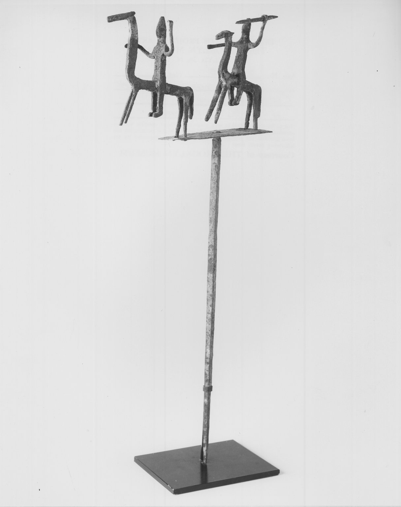

第 15 章
镜头的第二次切割
“照片不能代替实物，但它决定了大多数人将如何想象实物。”
这句话出自二十世纪初一位博物馆策展人的工作笔记。它被写在页面边缘，旁边贴着一张佛像照片——照片上的佛像被置于灰色背景前，光线从左侧打来，阴影落在右侧。策展人在照片下方加了一行小字：“档案编号：B-47。角度：正前偏左十五度。用途：图录。”
这几行字没有解释为什么要选这个角度，也没有说明光线为什么必须从左侧来。它们只是记录了一个决定。而这个决定一旦做出，就会进入印刷机、进入图书馆、进入课堂、进入每一个从未见过那尊佛像的人的脑海。他们会记住那个角度，那个光影，那个灰色背景。他们会以为那就是佛像本来的样子。
十九世纪最后十年，摄影术已经足够便携，可以跟随探险队进入亚洲腹地。玻璃底片、笨重的木制相机、化学药剂、暗房帐篷——这些装备加起来有几十公斤重，需要专门的驮畜运输。但探险家们愿意承担这个负担。他们知道，带回照片意味着带回证据，意味着在学术会议上展示成果，意味着说服资助者继续掏钱。
格伦威德尔在第一次吐鲁番考察期间，仍然主要依靠手绘临摹。他要求画家坐在洞窟里，一笔一笔地复制壁画上的线条和色彩。这很慢，但慢有慢的好处：临摹者被迫长时间注视，被迫注意每一个细节，被迫思考画师的笔触顺序和构图逻辑。临摹是一种理解。但勒柯克接手后，节奏变了。他带着相机进入洞窟，在壁画前架起三脚架。
曝光需要几十秒甚至几分钟，期间不能有任何晃动。洞窟里很暗，需要用镁粉闪光——瞬间的强光会照亮整个空间，然后留下一片刺鼻的白烟。在这短暂的燃烧中，相机完成了人眼无法完成的观看：它固定了一个瞬间，固定了一个角度，固定了一个取景框内的所有内容。
勒柯克和他的摄影师巴图斯在柏孜克里克拍摄了大量照片。他们不是随意按快门。每一张照片都经过构图选择：拍整面墙还是拍局部？拍全貌还是拍细节？如果拍局部，选哪一块？如果拍细节，聚焦在哪个人物上？
有一张著名的照片，拍摄的是柏孜克里克第9窟的《誓愿图》局部。照片只取了壁画中央的佛陀形象。供养人被裁切在外，背景中的建筑被裁切在外，上方的飞天也被裁切在外。这不是因为底片不够大——同一卷底片里还有别的窟的全景照片。这是一个选择。勒柯克认为佛陀的面部表情是这幅壁画最值得关注的部分。
他在后来的图录中写道，此像面容庄严，线条流畅，代表了回鹘时期佛教艺术的最高成就。他没有写的是：这幅壁画原本是连续叙事的一部分。
佛陀左右各有情节场景，讲述一个完整的故事。当读者翻开图录，看到这张照片，他们会以为《誓愿图》就是这样一个独立的、肖像式的构图。原境在取景框之外消失了。
这不是欺骗。这是摄影的固有属性。任何照片都只能呈现取景框内的东西。问题在于，取景框的位置由谁决定，依据什么标准。
斯坦因在敦煌拍摄时，做出了不同的选择。他更倾向于拍摄洞窟的全景，让壁画、塑像和建筑结构同时出现在画面中。这和他的学术背景有关——他受的是考古学训练，重视空间关系和出土位置。
但他也拍局部。在藏经洞的照片里，他让王道士站在经卷堆旁边，以此显示经卷的数量规模。王道士的表情模糊不清，但经卷的数量清晰可见。这张照片后来被反复使用，成为“敦煌发现”的视觉标志。人们记住的不是王道士的脸，而是那些堆到洞顶的经卷。
伯希和的照片则是另一种风格。他的法语训练让他对文字特别敏感。他在藏经洞内用相机拍摄了大量写经的局部——不是整卷，而是某几行字。他需要这些细节来做文献学研究。
但在这个过程中，他也生产了一种观看方式：经卷被分解为可引用的文本片段，脱离了其作为完整物品的物质性。纸张的质地、卷轴的装帧、墨迹的浓淡——这些在照片中变得次要。重要的是文字内容。
三位探险家，三种拍摄策略。它们共同构成了西方认识中国佛教艺术的第一批视觉档案。这批档案不是在图书馆里被翻阅，而是在出版后被广泛传播。勒柯克的《火州》图录、斯坦因的《塞林底亚》报告、伯希和的《敦煌石窟》图册——这些出版物进入大学图书馆、博物馆书店和私人收藏。学者引用它们，艺术家临摹它们，古董商参考它们。
图录中的照片经过了进一步的加工。印刷术有自己的要求：对比度需要加强，背景需要清理，某些细节需要修版。一张照片从底片到印刷品，经历了拍摄、冲洗、选片、排版、制版、印刷六个环节。每个环节都可能改变图像的外观。而最终呈现在读者面前的，已经是经过多次转译的版本。
但读者通常不会意识到这一点。他们翻开图录，看到一尊佛像，会认为自己在看“原作”的忠实再现。
这种信任是摄影媒介最强大的力量：它制造了一种透明性的幻觉。相机似乎只是机械地记录眼前的一切，不增不减。但取景框的位置、光线的方向、曝光的时间、焦点的选择——这些都是人的决定。
二十世纪二十年代，博物馆开始建立自己的摄影档案部门。这标志着一个新的阶段：摄影不再是探险队的临时行为，而是一种制度化的常规操作。大都会博物馆、大英博物馆、吉美博物馆——它们都雇用了专职摄影师，配置了专门的摄影室，制定了拍摄标准。这些标准看起来是技术性的：背景应该用中灰色，光线应该从四十五度角打来，佛像应该正面拍摄，画面中不能出现比例参照物。
但每一条标准背后都隐含着一个判断。中灰色背景意味着将文物从其原境中彻底剥离，使其悬浮在一个抽象空间里。四十五度角光线意味着用统一的照明条件抹平不同文物所处的不同光环境。正面拍摄意味着将佛像定义为一个对称的、静态的、可供凝视的对象。
去除比例参照物意味着让观众无法直观判断文物的大小——一尊三十厘米的小像和一尊三米高的大像，在照片中可能看起来完全一样。
这些标准不是某个人独断专行的产物。它们是在实践中逐渐形成的，受到艺术史学科规范、博物馆展示惯例和印刷技术限制的共同塑造。艺术史学科重视风格分析，需要清晰、标准化的图像来做比较研究。博物馆展示重视视觉效果，需要照片能够吸引观众。印刷技术则对图像的清晰度和对比度有要求。
结果是，全世界的博物馆照片开始变得越来越像。无论你翻开哪本图录，看到的佛像都呈现相似的姿态：正面、居中、光线均匀、背景干净。这种视觉上的一致性生产了一种知识上的秩序。佛像被纳入一个可比较、可分类、可排序的体系。你可以把唐代的佛像和宋代的佛像放在同一页上对比，观察风格的演变。你可以把中国的佛像和印度的佛像并置，讨论传播路线。这些学术操作都依赖于照片提供的标准化图像。但标准化也带来了损失。
当所有佛像都被拍成同样的角度、同样的光线、同样的背景，它们之间的差异被压缩到风格细节上——衣纹的深浅、面容的方圆、比例的协调与否。而那些无法被标准镜头捕捉的东西被系统性地排除在视觉档案之外。佛像与建筑空间的关系消失了。佛像与礼拜者的互动消失了。佛像在特定光线条件下的视觉效果也消失了。
天龙山佛首是一个典型的例子。二十世纪二十年代，山中商会将大量天龙山石窟的佛首盗凿贩卖。这些佛首进入欧美博物馆后，博物馆摄影师立即对它们进行了拍摄。拍摄在摄影室内完成，标准配置：灰色背景，四十五度光，正面构图。照片中的佛首看起来完美无缺——石质细腻，线条流畅，表情安详。它们被印在图录中，成为“中国雕塑”的代表。
但这些照片没有显示的是：佛首的断面。颈部以下被粗暴凿断的痕迹，在正面照片中完全看不到。摄影师没有拍摄背面，没有拍摄断面，没有记录那些暴力分离的证据。这不是刻意隐瞒，而是因为博物馆的拍摄标准不要求记录这些。
标准关心的是文物的“艺术价值”，而断面不属于艺术价值的范畴。于是，这些佛首在照片中获得了第二次生命。它们不再是盗凿的残片，而是完整的艺术品。它们的伤口被隐藏在中灰色背景中。它们的来源——那个在山西山崖上空洞洞的石窟——在取景框之外。
古董商很快学会了利用这一点。拍卖图录中的照片经过精心设计：光线要柔和，角度要讨巧，背景要干净。一尊在库房里积满灰尘的佛像，在照片中可以呈现出庄严的气度。买家根据照片做决定，有时甚至不到现场看实物。照片成为交易的媒介，也成为判断的依据。
山中商会在纽约和伦敦的拍卖图录，照片质量极高。他们雇用专业摄影师，使用大画幅相机，确保每一个细节都清晰锐利。图录的纸张是厚重的铜版纸，印刷精美。翻开图录，佛像一尊接一尊地排列，每一尊都配有简短的说明：年代、材质、尺寸、来源。来源一栏通常写着“中国某石窟”，但从不写明具体地点和获取方式。
这些图录本身就是一种出版物。它们不只是拍卖的工具，也被图书馆收藏，被学者引用。
几十年后，当研究者试图追寻某尊佛像的来源时，他们找到的往往就是这些图录中的照片。照片成为追溯的起点，也成为追溯的终点——因为照片之外的信息，已经消失在流通链条中。
明信片是另一个流通渠道。二十世纪初，博物馆开始制作馆藏文物的明信片，在礼品店出售。游客参观完展厅，可以买几张明信片带回家。这些明信片上的佛像照片，经过了更彻底的再设计：色彩被加强，背景被替换，有时还会加上边框和文字。佛像从博物馆的展品变成了大众消费品。
一张明信片被寄出，贴上邮票，盖上邮戳，跨越国界，到达收件人手中。收件人可能从未去过那家博物馆，从未见过那尊佛像的原作，但他通过明信片认识了它。他会把它贴在墙上，夹在书里，或者放进抽屉。佛像的形象就这样进入了日常生活，脱离了它的物质实体，也脱离了它的历史和宗教语境。
教科书是更强大的传播载体。二十世纪中期，艺术史教科书开始大量使用照片作为插图。这些经典教材在全球范围内被使用，塑造了几代学生对艺术史的基本认知。
书中关于中国佛教艺术的章节，配图都是博物馆提供的标准照片。学生在课堂上翻开教科书，看到一尊云冈石窟的大佛。照片的说明文字写着石窟编号、年代和朝代。学生记住这个年代、这个地点、这个风格特征。考试会考这些。但他们不会知道这尊大佛原本是在一个洞窟里，洞窟前有木构建筑，建筑前有礼拜的广场，广场上有朝圣者的足迹。他们只知道照片呈现的那个正面形象——庄严、巨大、孤立。
这就是“替身原作”的诞生过程。照片不是原作，但它在传播中获得了比原作更大的影响力。大多数人心目中的“云冈大佛”，不是那尊坐在山西砂岩山体中的石像，而是教科书中那幅黑白照片。照片定义了大佛的形象，也限制了人们对它的想象。
博物馆档案部门的工作进一步固化了这种状况。每一件入藏文物都会被拍摄存档。照片贴在档案卡上，卡片上填写编号、名称、年代、材质、尺寸、来源、入藏日期。这套档案系统是博物馆管理的基础，但它同时也是对文物的再次定义。
档案卡上的分类决定了文物的归属：是“雕塑”还是“建筑构件”？是“佛教艺术”还是“中国艺术”？是“唐代”还是“唐至五代”？这些分类看似技术性的，实则包含了学术判断。
摄影师在拍摄存档照片时，要遵循档案部门的要求。通常是一张正面照、一张侧面照、一张背面照，如果有铭文或特殊细节，再加拍局部。这套程序保证了信息的完整性，但也预设了什么是“完整的”信息。正面、侧面、背面——这三个角度被认为足以代表一件三维物品。其他角度被省略，因为它们不符合档案的标准。
某博物馆的档案库里，收藏着上万张中国佛教文物的照片。它们按编号排列在档案柜中，每一张都装在马尼拉纸信封里。信封上写着编号和简要描述。如果要查找某件文物，需要先查目录，找到编号，然后从柜子里取出相应的信封。这个过程是沉默的、有序的、非个人的。
照片在这里不是用来欣赏的，而是用来管理的。它们的功能是帮助博物馆掌握自己的收藏——知道有什么、在哪里、什么状况。但档案照片有时会被调出，用于研究或出版。
研究者来到档案室，填写申请表，说明研究目的。档案管理员从柜子里取出信封，交给研究者。研究者在桌上摊开照片，仔细观察。他们可能会发现一些在实物上不易察觉的细节：某处修复痕迹、某条细小的裂纹、某块颜色的微妙变化。照片在这里成为研究的工具，但研究者看到的仍然是照片，不是实物。他们的判断建立在图像之上。
时间久了，有些照片本身也成为了历史文物。早期的玻璃底片、银盐照片、手写标签——它们记录了一个时代的摄影技术、档案方法和审美标准。后来的研究者研究这些照片，不是为了研究照片中的文物，而是为了研究拍摄这些照片的人。他们分析构图、光线、角度，试图理解拍摄者的意图和预设。照片从透明的媒介变成了不透明的对象。
数字时代的到来并没有改变这个基本格局，反而加速了图像的流通。博物馆将馆藏照片数字化，上传到网站，供全球用户浏览和下载。高清数字图像可以放大到极细微的细节，可以自由旋转三维扫描的模型，可以在不同光线下模拟观看效果。技术提供了前所未有的可能性。
但选择仍然存在。数字化项目需要决定优先扫描哪些藏品，用多少分辨率，配什么样的元数据。网站的设计决定了用户如何浏览和搜索。首页推荐的“精选藏品”会获得更多点击，而那些没有被推荐的藏品则沉入数据库的深处。
新的技术制造了新的可见性，也制造了新的不可见性。某博物馆的网站上，一尊天龙山佛首的页面被浏览了数十万次。高清图像可以放大，看到石质的纹理和古代工匠的凿痕。页面下方有详细的说明文字，介绍佛首的年代、出处、风格特征。
但没有提到佛首是如何离开天龙山的，没有提到石窟现在的状况，没有提到中国方面的追索诉求。这些信息不在博物馆的数字化框架之内。它们没有被删除，只是没有被录入。
天龙山石窟的原址上，空洞的石窟仍然张着口。游客站在那里，用手机拍下空无一物的窟壁。他们的照片上传到社交媒体，成为另一种图像档案。
两套图像——博物馆的高清照片和游客的手机快照——在数字空间中并存，但很少被并置观看。它们属于不同的分类，不同的叙事，不同的解释框架。
二十世纪三十年代，一位德国艺术史家在柏林出版了一本关于中国雕塑的专著。书中使用了大量博物馆提供的照片。在序言中，他感谢各博物馆慷慨提供照片，使得这项研究成为可能。他承认自己未能亲眼见到所有这些作品，但通过这些精美的照片，他得以对它们进行细致的风格分析。
这段话透露了一个重要的事实：学者可以仅凭照片进行研究。照片成为学术论证的基础。风格分析——艺术史的核心方法之一——高度依赖图像的比较。将两件作品的照片放在一起，观察它们的异同，推断它们的年代和来源——这是艺术史家的日常工作。
但在这个过程中，照片替代了实物。学者比较的是图像，不是物品。这并不意味着学术研究不可靠。恰恰相反，基于照片的研究可以非常严谨和精确。
问题在于，这种研究方法的普及进一步巩固了照片的权威地位。当学术权威建立在照片之上，照片就不再只是工具，而成为了知识生产的参与者。它决定了哪些特征被看到，哪些被忽略。它预设了比较的框架。它为学术争论提供了共同的视觉基础。
龙门石窟的《帝后礼佛图》是一个极端的案例。浮雕被凿成碎块运出中国，在美国重新拼合展出。在这个过程中，照片扮演了多重角色。盗凿前，日本摄影师拍摄了完整的浮雕照片，这些照片后来成为拼合的依据。盗凿后，碎块在运输和交易中被反复拍摄，照片成为所有权的证明。拼合完成后，博物馆拍摄了新的照片，用于宣传和出版。每一个阶段，照片都在场。
如今，研究者想要了解《帝后礼佛图》的原貌，只能依赖早期的照片和拓片。实物已经离开了原境，原境本身也在后来的岁月中发生了变化。照片成为唯一的视觉证据。
但照片本身是有选择性的：拍摄者选取了角度，光线决定了阴影，取景框排除了周围的环境。研究者知道这一点，但他们别无选择。他们只能通过照片去接近一个已经消失的原境。
这就是“镜头的第二次切割”的最终后果。第一次切割是物理的——凿子将佛像从山体分离，锯子将壁画从墙面剥离。第二次切割是图像的——取景框将文物从空间中裁切，印刷将照片从底片中复制，档案将图像从语境中隔离。
“底片不会说谎，但摄影师会。”
这句话出现在大都会博物馆摄影部一份内部备忘录的边缘，用铅笔写的，笔迹潦草，像是某次工作会议上的随手涂写。写这句话的人可能是当时摄影部的助理摄影师查尔斯·希勒——他后来因为工业题材的摄影作品而为人所知，但在1928年，他的工作是每天在博物馆地下室的摄影室里为入藏文物拍摄存档照片。
备忘录的正文讨论的是拍摄标准问题：背景应该用多深的灰色，灯光应该从哪个角度打，佛像的正面照是否需要包含底座。这些问题在会议上被反复争论，因为每一个决定都会影响照片最终呈现的效果，进而影响研究者对文物的判断。希勒在备忘录边缘写下那句话，像是在提醒自己，也像是在嘲讽整个流程：他们制定了那么多规则，试图让照片变得“客观”，但最终按下快门的是人，而人总会做出选择。

1928年秋天，一尊来自天龙山石窟的佛首被送入大都会博物馆的摄影室。佛首刚刚入藏，编号尚未分配，入库单据上只写着一行字：“中国，唐代，砂岩，佛首，来源：山中商会。”摄影室在地下二层，没有窗户，四面墙壁刷成中灰色——不是偶然，而是经过测试后选定的颜色，因为中灰色在黑白照片中能提供最均匀的反射，不会干扰对文物本身的观看。天花板上悬挂着几组照明灯，可以调节角度和高度。地面铺着深色油布，防止反光。空气中有一股淡淡的化学药剂味道，来自隔壁暗房里的显影液和定影液。
希勒在摄影室里等待佛首被送来。他已经提前准备好了设备：一台8×10英寸的大画幅相机，装在三脚架上，镜头盖还盖着。相机旁边是一辆小推车，上面放着几片玻璃底片，每一片都装在黑色的片盒里。
他在工作日志上写下了日期和待拍摄物品的简要描述，然后开始调整灯光。按照博物馆的标准，佛像应该用四十五度角的光线——从上方斜射下来，在面部形成适度的阴影，突出五官的立体感，但又不至于让阴影过重而遮挡细节。这个标准是从艺术史学科借鉴来的。十九世纪末，德国艺术史家开始系统性地使用照片来做风格比较，他们发现四十五度角的光线最能够呈现雕塑的体积感和表面质感。这个发现后来被写入博物馆的拍摄手册，成为通行的规范。
佛首被放在一辆平板推车上推进来。两名工人把它抬到摄影台——一个可以旋转的圆盘底座，上面铺着同样的中灰色绒布。佛首高约四十厘米，重约三十公斤，石质表面有风化的痕迹，左耳垂缺了一小块，鼻尖有轻微的磨损。颈部以下是不规则的断面，凿痕清晰可见，有些地方露出了较浅的石色，说明断裂发生的时间并不长。
希勒绕着摄影台走了一圈，从不同角度观察佛首。他在日志中写道：“面部保存完好，表情安详，嘴角有微妙的弧度。断面粗糙，但从正面看不到。”然后他做出了第一个决定：只拍正面。
这不是偷懒。博物馆的存档标准要求拍摄正面、侧面和背面，但那是对完整造像而言。佛首没有背面可拍——它的背面就是断面。而断面，按照当时的标准，不属于需要记录的内容。
希勒在日志中没有解释这个决定，他只是写下：“角度：正面。”然后开始调整灯光。
四十五度角的光线从左侧打来。佛首的右半张脸陷入柔和的阴影中，左半张脸被照亮。阴影突出了颧骨的轮廓和眼睑的弧度，让原本就安详的表情显得更加沉静。希勒后退几步，从取景器中观察效果。他觉得光线太硬了，于是让助手在灯前加了一层柔光纸。阴影的边缘变得模糊，过渡更加自然。他又调整了佛首的角度——不是完全正面，而是略微偏左，大约十度。这个微小的偏转让佛首的目光不再直视镜头，而是略微偏向一侧，像是在注视某个不在画面中的东西。希勒在日志中记录了最终的角度：“正前偏左约十度。灯光：左上方四十五度，加柔光纸。背景：中灰。”
他按下快门。曝光持续了八秒。在这八秒里，佛首一动不动地坐在灰色背景前，被灯光从左侧照亮，被取景框裁切掉颈部以下的所有部分。快门关闭后，希勒在片盒上贴了一张标签，写上日期和编号。底片会被送到暗房冲洗，然后在接触印样上做进一步的筛选和标记。
两次切割都使文物变得更容易携带、更容易传播、更容易消费。但两次切割也都使文物失去了某些东西：第一次失去的是物质的原生位置，第二次失去的是视觉的原生关系。而这些失去的东西，在图像的海洋中变得不可见。当一尊佛像的照片可以在零点几秒内出现在世界任何角落的屏幕上，谁还会去想它原本坐在哪座山上、面对哪个方向、被什么样的光线照亮？
大英博物馆的档案库中，中国佛教文物的照片数量超过三万张。大都会博物馆的档案库中，约有两万五千张。吉美博物馆、柏林亚洲艺术博物馆、东京国立博物馆——每一家都有数以万计的照片存档。这些数字还在增长。每一次新的拍摄、每一轮新的数字化，都在增加这个图像库的体量。
但这些照片中有多少记录了文物的原境？有多少拍摄了文物的背面、侧面、顶部和底部？有多少显示了修复的痕迹、残缺的部分、不确定的细节？
档案不回答这些问题。档案只按照自身的逻辑排列：编号、日期、分类、格式。某件北齐佛立像，实物在展厅中展出的次数，自入藏以来共计三十七次。
而它的照片被印在图录、教科书、明信片和海报上的次数，据不完全统计，超过两万次。两万次对三十七次。图像的生命远远超过了实物的生命。大多数人认识这尊佛像，是通过那两万次中的某一次。而那一次，他们看到的不是佛像，是照片。照片中的佛像，灰色背景，四十五度光，正面构图。它看起来庄严、完整、永恒。